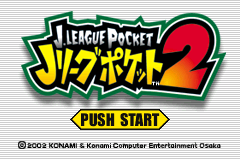

J.League Pocket 2 (Japan)
SRAM 256K gbakit Built-In 💾 MultiBoot
Cartridge Identity
- Game Code
AJ2J(FamilyAJ2)- Header Title
JPOCKET2- Maker / Revision
CM/ rev0- ROM Size
- 8.0 MiB (8,388,608 B)
- Save Media
SRAM 256K- SHA-256
d69e0240484c54c7a4f1383f8dfbe59f3a3b5ef047bc0b2d1d9a47dd5c3830ae- Engine / SDK Group
comm-002(145 families)
Screenshots

Link Cable & Multiplayer Communications
This title contains detected communication capabilities: 💾 MultiBoot.
Detailed protocol specifications, SIO registers, Joybus commands, and MultiBoot sequences are documented in the Link & Multiplayer Reference.
- Single-Cart MultiBoot
- Single-Cartridge MultiBoot (Download Play) client/server handler · Thumb SWI 0x25 (
0xDF25):0x056d02,0x0dda68,0x0fd906,0x0fd958
Battery Save Support in gbakit
Built-in definition (AJ2J)
gbakit save verify AJ2J save.sav
gbakit save decode AJ2J save.sav
gbakit save fix AJ2J damaged.sav -o repaired.savROM Assets, Compression & Audio
- BIOS Compression
- LZ77 (
0x10): 3,937 streams · RLE (0x30): 0 streams - ROM Pointer Tables
- 24 tables (7 pointing to validated compressed streams)
- SDK Backup Tags
SRAM_V112
Text, Fonts & Scene Data
- Primary Text Encoding
- LZ77-compressed ASCII (
200Shift-JIS runs ·2LZ77 ASCII blocks) - Font & VWF Indicators
- VWF Width Table 1bpp Font · BIOS SWIs: BitUnPack
0x10:24· LZ770x11/12:20· Huffman0x13:5· RLE0x14/15:12 - Scene & Packaging
32ROM pointer tables (≥32 entries,4≥200) ·4relativeu32TOCs ·279OAM metasprite hits
Hardware MMIO Subsystems
ppu_display0x80004cc,0x80005c8,0x80006b4,0x80009c8,0x801a9a0,0x803729csave_bus_sram_flash0x801a46c